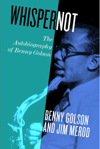

<body bgcolor="#FFFFFF" text="#000000" link="#0000FF" vlink="#CC0000" alink="#CC0000"><center><hr width="350" size="1" align="center" noshade>A funny, touching, and insightful memoir from one of the last surviving members of the greatest generation of American jazz musicians<hr width="350" size="1" align="center" noshade><p><a href="https://cdcshoppingcart.uchicago.edu/Cart/ChicagoBook.aspx?ISBN=&&PRESS=temple" target="_top">Buy this book!</a> | <a href="https://cdcshoppingcart.uchicago.edu/Cart/Cart.aspx?PRESS=temple" target="_top">View Cart</a> | <a href="https://cdcshoppingcart.uchicago.edu/Cart/Cart.aspx?PRESS=temple" target="_top">Check Out</a></p><p></p></center><!--none//--><h1 class = "booktitle">Whisper Not</h1> <h1 class = "subtitle">The Autobiography of Benny Golson</h1>
<h3>Benny Golson and Jim Merod </h3>
<p class="info">cloth: $39.50, May 16<BR>EAN:&nbsp;978-1-4399-1333-8<BR><font color=#990033>Available</FONT><font size=-7><br>&nbsp;</font></p><p class="info">e-book: $39.50, May 16<BR>EAN:&nbsp;978-1-4399-1335-2<BR><font color=#990033>Available</FONT><font size=-7><br>&nbsp;</font></p></p></td></tr></table>
<BR> <p class="info">352 pp<BR> 6 x 9<BR> 33 halftones <p class="info"><font size=-7>&nbsp;</font></p><p class="info">
</P><BLOCKQUOTE><p>" <i>Benny is a dear friend who has always been one of my favorite composers and saxophonists. His creativity is absolutely top level. I had no idea of the many spectacularly interesting and moving incidents in Benny's life. Eloquently written, </i>Whisper Not <i> reads as though Benny is speaking directly to you (another of his many hidden talents). Do yourself a favor and pick up this book. I highly recommend it.</i>"<br/> <b>-Herbie Hancock</b><br>
</BLOCKQUOTE>
<p>" <i>One of the greatest artists our country has is Benny Golson. He is not only a great musician, but an original and fabulous composer. He is inventive and creative and his work is loved the world over. Benny is a rare, creative genius. All I would like to say is THREE CHEERS for Benny Golson!</i>"-<b>Tony Bennett<br/></b><br/>" <i>Composer supreme, tenor man supreme, jazz man supreme, good guy supreme: that's BENNY GOLSON!"</i>-<b>Sonny Rollins<br/></b><br/>Born during the de facto inaugural era of jazz, saxophonist Benny Golson learned his instrument and the vocabulary of jazz alongside John Coltrane while Golson was still in high school in Philadelphia. Quickly establishing himself as an iconic fixture on the jazz landscape, Golson performed with dozens of jazz greats, from Sonny Rollins, Coleman Hawkins, and Jimmy Heath to Dizzy Gillespie, Freddie Hubbard, and many others. An acclaimed composer, Golson also wrote music for Hollywood films and television and composed such memorable jazz standards as "Stablemates," "Killer Joe," and "Whisper Not."<br/><br/>An eloquent account of Golson's exceptional life-presented episodically rather than chronologically- <i>Whisper Not </i>includes a dazzling collection of anecdotes, memories, experiences, and photographs that recount the successes, the inevitable failures, and the rewards of a life eternally dedicated to jazz.<br>
<P CLASS="top"><A HREF="#top">BACK TO TOP</A></P>&nbsp;<h2 class="inpageheading"><A NAME="excerpt"></a>Excerpt</h2><p><A HREF="http://www.temple.edu/tempress/chapters_1800/2394_ch1.pdf">Read the Preface and the Introduction (pdf).</A><p><br>
<P CLASS="top"><A HREF="#top">BACK TO TOP</A></P>
<BR>&nbsp;
<h2 class="inpageheading"><A NAME="reviews"></a>Reviews</h2>
<p><i>&#11;"One of the greatest artists our country has is Benny Golson. He is not only a great musician, but an original and fabulous composer. He is inventive and creative and his work is loved the world over. Benny is a rare, creative genius. All I would like to say is THREE CHEERS for Benny Golson!"<br/></i><b>-Tony Bennett</b><br>
<p>" <i>Composer supreme, tenor man supreme, jazz man supreme, good guy supreme: that's BENNY GOLSON!"<br/></i>-<b>Sonny Rollins</b><br>
<p>" <i>Like his finest compositions, Benny Golson's autobiography is instantly engaging and enchants to the end. He and his collaborator, Jim Merod, have found an original way to tell the story of a long and fulfilling life, creating a tapestry of recollection, insight, and understanding of the human and artistic aspects of the music-or simply said, one of the best books on the subject of jazz</i>."<br/>-<b>Dan Morgenstern</b>, Director Emeritus of the Rutgers Institute of Jazz Studies and author of <i>Living with Jazz</i><br>
<p><i>"Having known Benny Golson since the mid-1960s, I can say that this autobiography, written in collaboration with Jim Merod, really captures the essence of Benny Golson the man and Benny Golson the musician and composer. Although Benny predates me by some fifteen years, I spent my teen years playing at some of the same spots on Columbia Avenue in Philly. For me, </i>Whisper Not <i>combines a walk down memory lane with a history lesson to bring to life the enduring friendships and bonds created during Benny Golson's formative years. Well done, Jim Merod, for telling the story so expertly; well done, Benny Golson, for having lived your story so fully. This is a GREAT BOOK!</i>"<br/>-<b>Kenny Barron</b>, The Juilliard School<br>
<p>" <i>Jazz musicians have long known that Benny Golson is not only a marvelous saxophonist and composer but also an eloquent and witty raconteur. Now, with </i>Whisper Not, <i> the world can enjoy his verbal gift as he reminisces about John Coltrane, Sonny Rollins, Chick Corea, and the many other greats he has counted among his colleagues. As a special bonus</i><i>-</i><i>referencing some of his most-recorded works</i><i>-</i><i>he even provides some insider tips on composing. This book is a must-read for all music fans and musicians!"<br/></i>-<b>Lewis Porte</b>r, Pianist and Professor of Music at Rutgers University-Newark<br>
<p><i>"That 87-year old Benny Golson is a figure of consequence in the music is indisputable. He has form as both player and composer, initially of original pieces that have become jazz standards and, more latterly, as a gilded soundtrack composer for films and TV. So, his is a story worth the telling and long overdue for the telling, you could say.... (H)is three opening chapters recounting his boyhood friendship in Philadelphia with John Coltrane and their emerging interest in the music are fascinating, each youngster's first tentative steps into bandstand activity vividly described, his virtual hero-worship of the young Coltrane quite touching.... Golson (is) often disarmingly frank about his instrumental shortcomings.... Excellent illustrations by the way." <br/></i><b><i>-Jazzwise</i></b><br>
<p><i>"(Golson's) account of an extraordinary career beginning in 1940s Philadelphia and ending in recognition as one of the music's most respected and influential composers, arrangers and instrumentalists.... (T)he book does indeed contain numerous nuggets of great good sense on subjects such as ballads...racism...and artistic development.... (I)ts best-written and most interesting account...(is his)...relationship with Coltrane, and fascinatingly details Golson's growing appreciation of jazz via exposure to the bebop experiments taking place.... </i>Whisper Not <i>is good, it is very good - thoughtful, eloquent, nuanced - and anyone interested in jazz in its heyday will be fascinated and gripped by much of what Golson has to say."</i><b> <br/></b><b><i>-London JazzNews</i></b><br>
<p><i>"An eloquent account of Golson's exceptional life." </i><b><br/></b>-<b><i>Susquehanna Life</i></b><br>
<p><i>"</i>(Whisper Not) <i> will entrance the reader with picturesque clarity.... Golson offers...insightful reflections on a host of...jazz luminaries such as Art Blakey, Bill Evans, Miles Davis, and Thelonious Monk."<br/></i><b><i>-Downbeat</i></b><br>
<p><i>"The book certainly contains plenty of stories that shed light on the many noteworthy figures from the world of jazz with whom Golson interacted over the decades.... Golson has an appealing storytelling style."<br/></i><b><i>-Association for Recorded Sound Collections (ARSC) Journal</i></b><br>
<p><i>"It's no surprise that</i> Whisper Not <i> is an engaging tome as its author is one of the most eloquently loquacious musicians ever to grace a bandstand. It triumphs not only as a revealing account of an exceptional life and illuminating addition to jazz biography but also as a very well written literary work.... (W)hile he touches on personal issues, such as love, marriage, fatherhood and religion, it is his life in music that makes the book a most memorable story." <br/></i><b>-</b><b><i>New York City Jazz Record</i></b><br>
<P CLASS="top"><A HREF="#top">BACK TO TOP</A></P>&nbsp;<P>
<h2 class="inpageheading"><A NAME="contents"></a>Contents</h2><P><span style="font-family: 'Verdana';font-size: 13px;" >Preface, by Jim Merod<br/><br/>Introduction<br/><br/></span><span style="font-family: 'Verdana';font-size: 13px;font-weight: bold;" >Part I John Coltrane<br/></span><span style="font-family: 'Verdana';font-size: 13px;" >Chapter 1. One of a Kind: John Coltrane<br/>Chapter 2. John and I Meet Diz and Bird<br/>Chapter 3. John Becomes a Dynamo <br/><br/></span><span style="font-family: 'Verdana';font-size: 13px;font-weight: bold;" >Part II The &rsquo;Hood and Youthful Reckonings<br/></span><span style="font-family: 'Verdana';font-size: 13px;" >Chapter 4. Uncle Robert and the Man<br/>Chapter 5. Two Heroes and a Night at Minton's<br/>Chapter 6. Early Tragedies and Victories<br/>Chapter 7. Welfare Days, Hard Times<br/><br/></span><span style="font-family: 'Verdana';font-size: 13px;font-weight: bold;" >Part III Great People<br/></span><span style="font-family: 'Verdana';font-size: 13px;" >Chapter 8. No One Else: Bobbie Hurd<br/>Chapter 9. Moose and Bostic<br/>Chapter 10. Art Blakey's Neophytes and Tadd Dameron's Luck<br/>Chapter 11. Further Adventures with Tadd and an Evening with Louis Armstrong<br/>Chapter 12. The Duel: Clifford Brown and Fats Navarro<br/>Chapter 13. Wonder and Beauty: Betty Carter and Art Farmer<br/>Chapter 14. Genius Squared: Jimmy and Percy Heath<br/>Chapter 15. Unrivaled Aces: Sarah Vaughan and Bill Evans<br/>Chapter 16. Four &quot;Brothers&quot;: Mulgrew Miller, Woody Herman, Henry Brant, and George Russell<br/><br/></span><span style="font-family: 'Verdana';font-size: 13px;font-weight: bold;" >Part IV Hollywood<br/></span><span style="font-family: 'Verdana';font-size: 13px;" >Chapter 17. Starting Over<br/>Chapter 18. Gettin' My Mojo Workin'<br/>Chapter 19. </span><span style="font-family: 'Verdana';font-size: 13px;font-style:italic;" >M*A*S*H<br/></span><span style="font-family: 'Verdana';font-size: 13px;" >Chapter 20. Movie Stars Like Jazz, Too<br/><br/></span><span style="font-family: 'Verdana';font-size: 13px;font-weight: bold;" >Part V Amazing Friendships<br/></span><span style="font-family: 'Verdana';font-size: 13px;" >Chapter 21. Quincy Jones<br/>Chapter 22. Sweets and Diz<br/>Chapter 23. Philly Joe Jones<br/>Chapter 24. Monk, Max, and Dinah<br/>Chapter 25. Curtis Fuller and The Jazztet<br/><br/></span><span style="font-family: 'Verdana';font-size: 13px;font-weight: bold;" >Part VI Music and Writing</span><span style="font-family: 'Verdana';font-size: 13px;" > <br/>Chapter 26. Writing<br/>Chapter 27. Lessons<br/>Chapter 28. &quot;Stablemates&quot;: My First Recorded Song<br/>Chapter 29. &quot;Along Came Betty&quot;<br/>Chapter 30. &quot;I Remember Clifford&quot;<br/>Chapter 31. The Ballad and &quot;Weight&quot;<br/><br/></span><span style="font-family: 'Verdana';font-size: 13px;font-weight: bold;" >Part VII Icons<br/></span><span style="font-family: 'Verdana';font-size: 13px;" >Chapter 32. Steven Spielberg and Tom Hanks<br/>Chapter 33. Duke and Strayhorn<br/>Chapter 34. Coleman Hawkins<br/>Chapter 35. Art Blakey and Thelonious Monk<br/>Chapter 36. Blakey and The Jazz Messengers<br/>Chapter 37. Kenny Dorham and Lee Morgan<br/>Chapter 38. Sonny Rollins<br/>Chapter 39. Great Performances: Oscar Pettiford, Ron Carter, Billy Higgins, Billy Taylor, and Walter Davis, Jr.<br/>Chapter 40. Charles Mingus, Benny Goodman, Gigi Gryce, and Horace Silver<br/>Chapter 41. Peggy Lee and Diana Ross<br/>Chapter 42. Milt &quot;Bags&quot; Jackson, Larry Young, Joe Farrell, and Tony Williams<br/>Chapter 43. Wynton Kelly and Chick Corea<br/>Chapter 44. Miles Davis and Geoffrey Keezer<br/>Chapter 45. Mickey Rooney, Redd Foxx, Jersey Joe Walcott, and Muhammad Ali<br/><br/></span><span style="font-family: 'Verdana';font-size: 13px;font-weight: bold;" >Part VIII Verses and a Coda<br/></span><span style="font-family: 'Verdana';font-size: 13px;" >Chapter 46. Notes on Starting Over<br/>Chapter 47. The Blues<br/>Chapter 48. Brielle<br/><br/>Coda: A New Way of Life<br/><br/>Acknowledgments<br/>Index</span></P>
<P CLASS="top"><A HREF="#top">BACK TO TOP</A></P>
</P><BR>&nbsp;
<H2 class="inpageheading"><A NAME="author bio"></a>About the Author(s)</H2><p><b>Benny Golson </b>is an NEA Jazz Master, composer, arranger, and saxophonist. After helping Art Blakey revamp his regime with The Jazz Messengers, he co-founded The Jazztet with trumpeter Art Farmer. He has composed not only jazz standards, including "Killer Joe" and "Along Came Betty," but also music for films and television, including <i> It Takes a Thief </i>and <i> M*A*S*H</i>.<br>
<p><b>Jim Merod</b> has recorded a veritable "who's who" of jazz greats under his BluePort Jazz label. He is a Professor of Literature and Humanities at Soka University, who has also taught at Cornell, Brown, Brandeis, Stanford, and UCLA. He is the author of <i>The Political Responsibility of the Critic</i> and the editor of <i>Jazz as a Cultural Archive,</i> a special issue of the journal <i>boundary 2</i>.<br>
<P CLASS="top"><A HREF="#top">BACK TO TOP</A></P>
<p><h2 class="inpageheading"><a name="subjects"></a>Subject Categories</h2> <p><a href="http://www.temple.edu/tempress/biography.html" target="_top">Biography/Memoir/Autobiography</a> <br><a href="http://www.temple.edu/tempress/music.html" target="_top">Music and Dance</a> <br><a href="http://www.temple.edu/tempress/philly.html" target="_top">Philadelphia Region</a> <br><a href="" target="_top"></a> <br><a href="" target="_top"></a> </p>
</p>
<P>
</P>
<p align="center"><a href="https://cdcshoppingcart.uchicago.edu/Cart/ChicagoBook.aspx?ISBN=&&PRESS=temple" target="_top">Buy this book!</a> | <a href="https://cdcshoppingcart.uchicago.edu/Cart/Cart.aspx?PRESS=temple" target="_top">View Cart</a> | <a href="https://cdcshoppingcart.uchicago.edu/Cart/Cart.aspx?PRESS=temple" target="_top">Check Out</a></p><p><font face="Arial" size="1"><a href="copyright.html" onMouseOver="window.status='Web Copyright Policy';return true;" onMouseOut="window.status=''" title="Web Copyright Policy">&copy;</a> 2016 <a href="http://www.temple.edu" target="new" onMouseOver="window.status='Link to Temple University home page';return true;" onMouseOut="window.status=''" title="Link to Temple University home page">Temple University</a>. All Rights Reserved. http://www.temple.edu/tempress/titles/2394_reg.html</font></p>